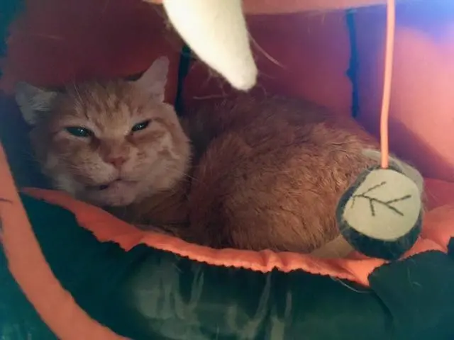
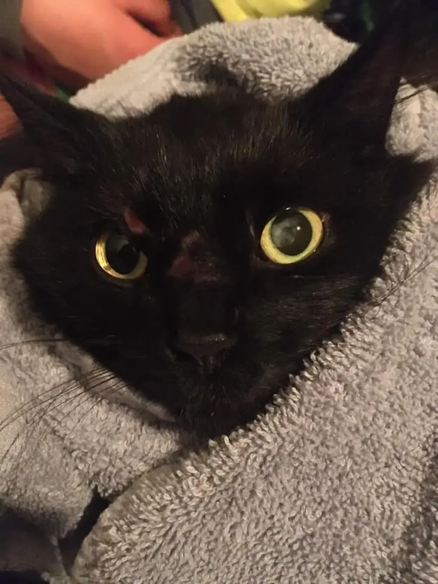
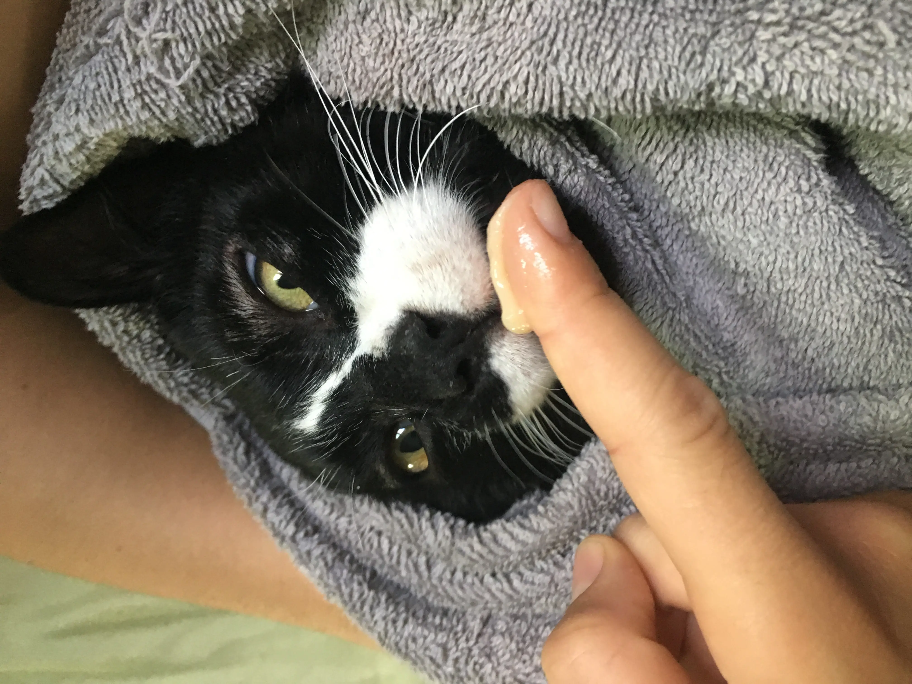
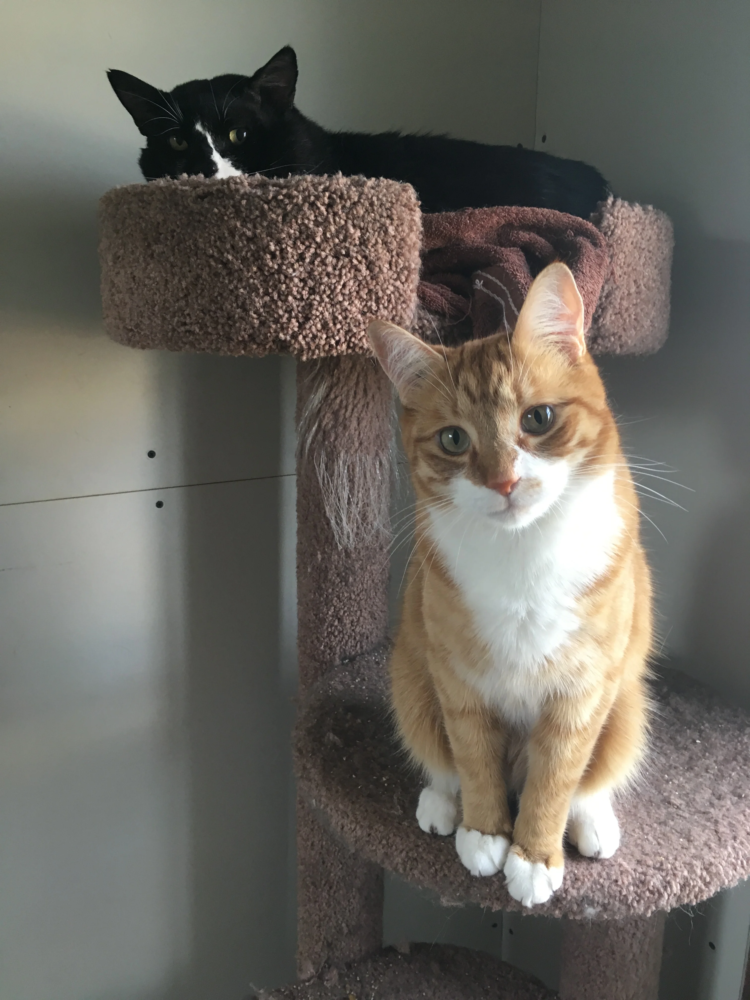
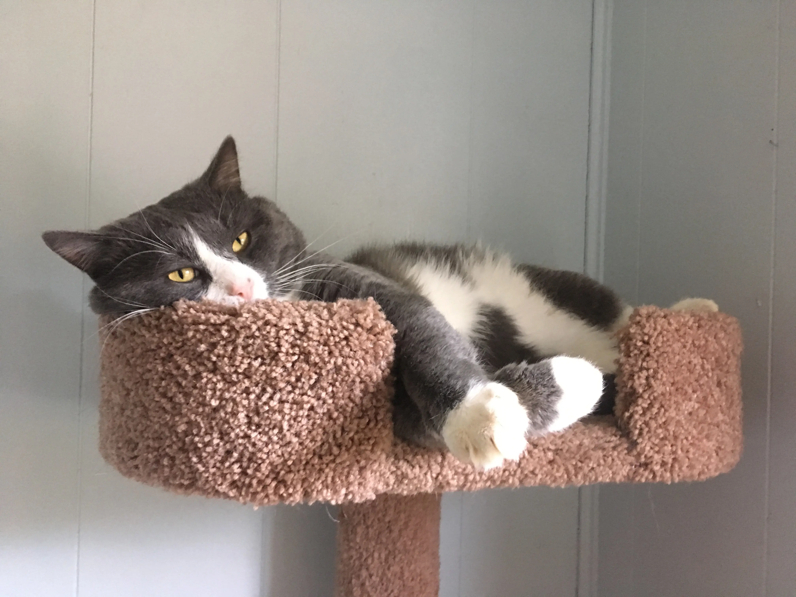

Guide
Socializing feral cats is a very intricate process. There’s no one standard guide (or there shouldn’t be) because every cat requires a different approach. To put it simply, this is more of a trial-and-error type of technique and often requires making judgement calls. There are some common denominators, and I will cover those as well as my socialization process in general.
At first, feral cats display similar behaviour: hide in the darkness – often in tight spots – their body stiff and gathered. Their pupils are huge, and their ears are always alert. Any sound makes them jump, and they are always prepared to defend themselves and run. They don’t come out of hiding much even when you’re not around. When they do, it’s typically under the cover of darkness (i e at night) and only for a short period of time – long enough to relieve themselves and eat/drink. Their space of habitat – whether it’s a room or a kennel) is tidy and mostly untouched.
So what can you do?
Step one is to get to know them and, more importantly, let them get to know you. Keep sessions short and offer minimal contact. I’d recommend short 5-minute visits multiple times a day. As they get more comfortable with you, extend them. Talk, read, sing – that allows them to get to know your voice. Make sure it’s quiet and soothing. Toss treats into their hiding spot as long as a) the gesture doesn’t stress them out and b) they display interest in treats. When giving them wet food, push it closer to the cat with a feral poker (as long as it doesn’t stress them out too much).
Once the cat seems a bit more comfortable, move to the next stage. Signs of getting more comfortable include: the animal stops hissing or growling, the posture is more relaxed, the cat starts blinking or closing their eyes, etc.
Quick note: there’s no particular timeline for this or any other steps and requires a judgement call. If you see that the cat is getting stressed out, end your session and come back again later – maybe even go to the previous step.
Next, add some contact. No hands yet! Use a feral poker or scratcher, and see how that works. At first, let them get used to the tool. I often use liquid treats for this: squirt some out of the tube on the end of the poker and offer it to the cat. Make sure you move slowly and pause if the animal gets stressed and especially if they get defensive. Don’t forget to talk to them as you move the poker closer until it’s in front of their nose, so they can smell it. Some will be tempted to try the offering right away but, oftentimes, you might have to dab their nose with the poker to make them try the treats. If the cat is still not interested in liquid treats after a few tries, move on or try something else. Spoon-feeding them wet food is a good alternative, too, as long as it doesn’t stress them out.
Once you’ve done this a few times, you can try petting the animal with the poker. Go for the cheeks or chin first. Cats with ear mites will totally love getting scratched near their ears. Yes, in this case, ear mites are your friends. It doesn’t mean you shouldn’t start treating their ears right away, though, as it takes a while to get rid of the parasites anyway. If the cat lashes out or hisses/growls, back off and try again later. Do not force yourself on the animal. Reward positive behaviour with treats and leave sessions on a good note.
When you get the animal comfortable with feral pokers, you can try multiple techniques and see what works for the feral cat you’re working with. At this point, it’s a good idea to extend sessions if it’s going really well AND the cat is enjoying it.
A common technique the shelters use involve shortening the feral poker, your hand getting closer and closer to the animal until you can offer treats from hand. Don’t overdo it. Take a couple of sessions and see how it works. If you’re confident enough, you can try introducing your hand to the cat without the poker. At this point, they will know your smell, and might even get comfortable enough to allow you to pet them. Just like with the poker, start slow and keep talking to them. Maybe offer treats first. Move slowly and non-threateningly (it’s especially important not to put the hand right above their heads). Give them a scratch, offer a treat and slowly withdraw your hand. Do this until the cat is relaxed enough to let you pet them for a longer period of time. Make sure you watch the cat’s body language to know when to keep going and when to stop.
If the cat is really into treats, encourage them to come out of their hiding. No, it won’t work on the first try, but getting them to move closer and closer to the exit or poke their head out is an improvement too. Some cats will end up coming out, but others won’t and it’s okay. Each animal is different and so they require different approaches.
Toweling mostly works well for kittens, but I had success with adults too. The first adult cat I ever toweled for B-mod was a 10-year-old feral, who was extremely protective of his hideout. He’d often lash out at hands and pokers, and no one at the shelter could ever know for sure when you could pet him and when you’d have been better off to leave him alone. So I tried toweling. He stayed toweled in my arms for longer than I thought he would, letting me scratch his cheeks and chin. He didn’t look too happy, but he also wasn’t in distress. Once he wanted to go, I let him run and hide. This teaches feral cats that they’re free to do their own thing, and people aren’t trying to hurt them. I toweled him the next day, but this time he started shaking in my arms. I modified the technique: put him on the floor, still wrapped up in a towel. It worked. He stopped shaking and started enjoying pets more. The next time I put him on the floor right away. By the end of the session, the towel could be loosely wrapped around him, and he would still be there, now purring and leaning into my hand. This continued for a few more sessions. Then one day, during my first visit with him, he jumped out of the towel as soon as I put him on the floor, and started weaving around me, rubbing against my body. After that break-through, the rest was easy. It’s important to note that it only happened two or three days after I first started toweling this cat. I worked with him on a regular basis, visiting him at least three times a day. Consistency does yield good results.
I toweled many cats since then, offering them pets and cuddling them tight up against my chest. I’d even take a nap with them once both the cat and I would be comfortable enough with each other. Oftentimes, the cat would nap with me.
While I’m on the subject of naps: yes, naps as well as sleepovers actually worked extremely well. The cats would get used to my presence and learn that I’m not out to get them. I fostered a feral cat that started joining me on the bed. Another one slept on the floor not far from the bed. Others would roam around their habitat with me nearby.
Sometimes, starting to play with them can encourage them to come out. Once they learn to play and have fun with it, they can get quite brave and confident. This works well with younger cats, but it will be tough to get an older one to start playing as much.
If the feral cat came from a colony or if it’s younger or a kitten, introducing a social cat can come in handy. I have a cat that absolutely adores every cat he meets, and I have introduced him to feral cats and kittens. He offered them his confidence, taught them to play (and misbehave too) and spent time taking care of them. He showed them the ropes of being a house cat. He taught them how amazing their lives can be with people. I always try to employ him for his amazing personality.
If, at this point in socialization, the cat is out in the open, you can approach them slowly and try petting them. Talk to them, ask if you can approach or touch them, and even let them smell your hand. You can offer treats, too. Just don’t rush it and, if possible, do not raise your hand above their head. I had this one feral cat that, after a really unusual break-through, ended up spending most of his time on top of a cat tree, slowly letting me pet him more and more. At first, I had to start petting him from the side as he otherwise felt threatened and tried lashing out but, eventually, he got used to my hand and would always yell for attention.
Once the cat gets comfortable around you, you can start introducing more people. Typically, other people will need to go through a similar process to earn the cat’s trust but it will be a) easier and b) faster. If you didn’t use play to earn their trust, now is a good time to teach them how much fun it is. Playing builds up their confidence and strengthens your trust. You can also try handling them more so they can be easily taken to the vet or get their nails trimmed. From here, you basically need to teach them everything else a house cat would typically experience.